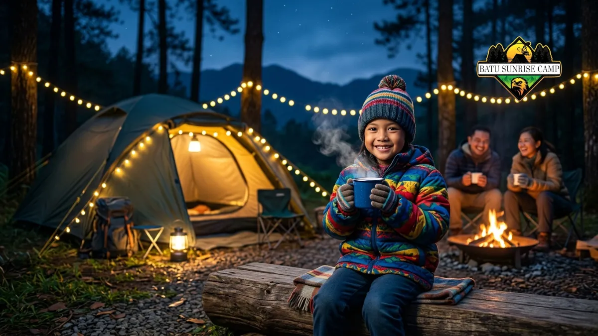

Tips memilih paket camping ground di Batu untuk keluarga meliputi menyesuaikan fasilitas dengan kebutuhan anak, memastikan akses jalan mudah, dan mempersiapkan perlengkapan tambahan sebelum berangkat.
Apa Saja Tips Memilih Paket Camping Ground di Batu untuk Keluarga?
Tips utama memilih paket camping ground di Batu untuk keluarga adalah memastikan fasilitas dasar seperti toilet dan listrik memadai, serta kapasitas tenda sesuai jumlah anggota keluarga.
Beberapa tips praktis yang dapat dipertimbangkan sebelum memesan paket:
- Pilih paket dengan kapasitas tenda yang sesuai jumlah anggota keluarga, agar tidak terlalu sempit saat bermalam.
- Pastikan lokasi campground memiliki akses toilet dan air bersih yang memadai, terutama jika membawa anak kecil.
- Cek apakah lokasi memiliki penerangan yang cukup di area jalan menuju tenda dan toilet pada malam hari.
- Tanyakan kepada pengelola mengenai kebijakan pembatalan atau penjadwalan ulang jika cuaca tidak mendukung.
- Pertimbangkan paket dengan fasilitas tambahan seperti menu makan agar tidak perlu memasak sendiri bersama anak-anak.
Bagaimana Persiapan Sebelum Berangkat Camping Bersama Keluarga di Batu?
Persiapan sebelum berangkat camping bersama keluarga di Batu meliputi mengecek prakiraan cuaca, menyiapkan perlengkapan pribadi, dan melakukan reservasi lebih awal.
Langkah persiapan yang disarankan sebelum berangkat:
- Cek prakiraan cuaca beberapa hari sebelum keberangkatan, karena kawasan pegunungan rawan hujan mendadak.
- Siapkan pakaian hangat, jaket tebal, dan alas kaki yang nyaman untuk medan yang mungkin licin atau berbatu.
- Bawa obat-obatan dasar dan perlengkapan pertolongan pertama, terutama jika bepergian bersama anak-anak.
- Konfirmasi ulang reservasi kepada pengelola sehari sebelum keberangkatan untuk memastikan tempat sudah siap.
- Siapkan power bank atau senter cadangan, karena akses listrik di beberapa campground bisa terbatas.

Persiapan camping bersama anak di kawasan Batu Malang untuk pengalaman berkemah yang nyaman.
Apa Saja Kesalahan yang Perlu Dihindari Saat Camping Keluarga di Batu?
Kesalahan yang perlu dihindari saat camping keluarga di Batu antara lain kurang memperhatikan kondisi cuaca, tidak reservasi lebih awal, dan meremehkan suhu dingin pada malam hari.
Beberapa kesalahan umum yang sebaiknya dihindari:
- Datang tanpa reservasi saat akhir pekan atau musim liburan, sehingga campground sudah penuh.
- Tidak membawa jaket tebal karena menganggap paket lengkap sudah mencukupi kebutuhan kehangatan.
- Membiarkan anak-anak bermain terlalu dekat area api unggun tanpa pengawasan.
- Tidak mengecek ulang fasilitas toilet dan air bersih sebelum memutuskan lokasi campground.
- Mengabaikan waktu tempuh perjalanan, sehingga tiba di lokasi terlalu larut malam.
Bagaimana Cara Menjaga Kenyamanan Anak Selama Camping di Batu?
Cara menjaga kenyamanan anak selama camping di Batu adalah dengan memastikan suhu tubuh anak tetap hangat, menyediakan camilan favorit, dan menjaga jadwal tidur senormal mungkin.
Suhu udara di kawasan pegunungan Batu cenderung turun signifikan pada malam hari, sehingga penting memastikan anak mengenakan pakaian berlapis dan sleeping bag yang sesuai ukuran tubuhnya.
Membawa camilan atau makanan favorit anak juga dapat membantu menjaga suasana hati mereka tetap nyaman selama di lokasi yang mungkin belum mereka kenal.
Selain itu, usahakan menjaga jadwal tidur anak semirip mungkin dengan rutinitas di rumah, meski suasana di alam terbuka tentu berbeda dari lingkungan rumah pada umumnya.
Libatkan anak dalam kegiatan sederhana seperti mengumpulkan kayu bakar atau bermain di sekitar tenda dengan pengawasan penuh orang tua.
Kesimpulan
Camping bersama keluarga di Batu dapat menjadi pengalaman yang menyenangkan jika dipersiapkan dengan matang.
Pilih paket camping ground dengan fasilitas ramah keluarga, siapkan perlengkapan pribadi tambahan, cek prakiraan cuaca, dan lakukan reservasi lebih awal terutama saat musim liburan agar pengalaman berkemah tetap nyaman dan aman bagi seluruh anggota keluarga.